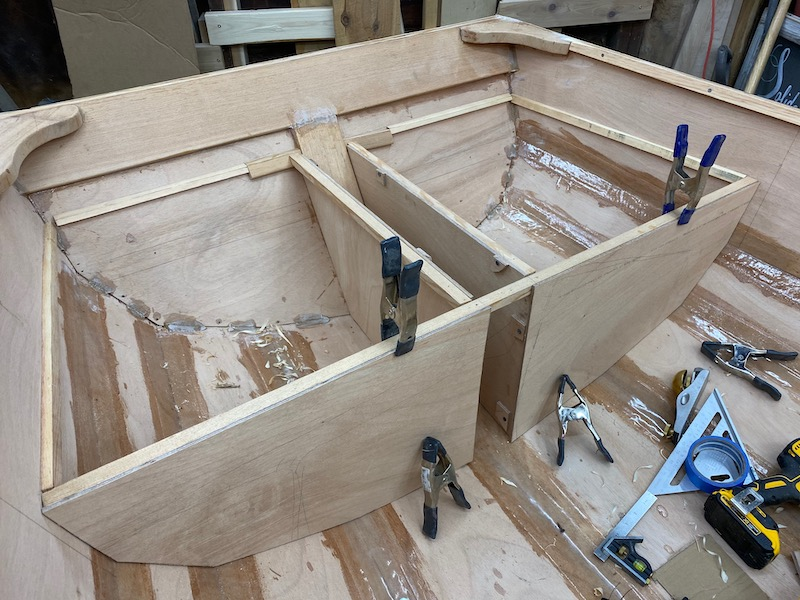
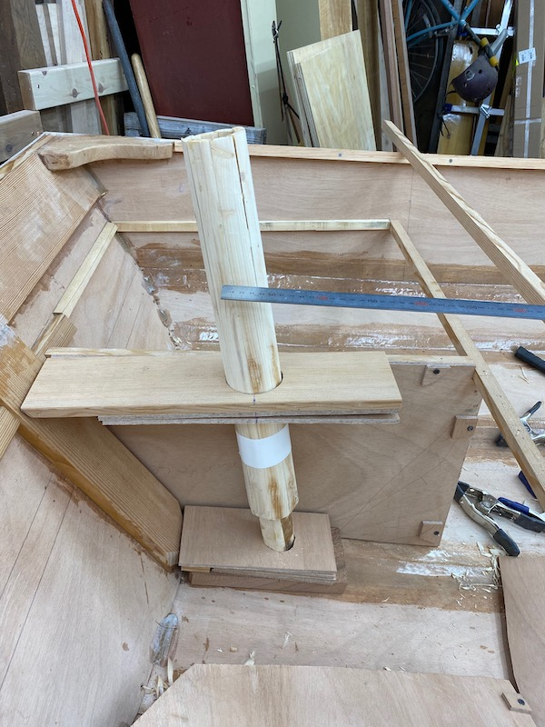

Important Notes (!!! READ THESE EVEN IF YOU IGNORE THE REST !!!)
You (probably) need to install the rudder post before gluing in the mizzen partner, assuming you want to screw in from the inside in addition to gluing on the outside (as is suggested by the designer). The design for the rear tank I used keeps this area accessible, in theory, but it is a lot harder to get to once the partner (and then tank top) is on.
Photos of building sequence, with notes
This photo gives a good sense of how I was arranging the stern: two sealed tanks with an open channel in the middle which houses the mizzen step, so if water runs down from the mizzen mast, it can drain out. The tank sides also provide support for the seat tops and the mizzen partner (additional framing will go over the tank tops).
The mizzen partner and step are shown here (not glued or epoxy coated yet!): they have a 5.75 degree rake, which corresponds to 50mm rake back a half-meter up, which happens to be what my fake mizzenmast is.